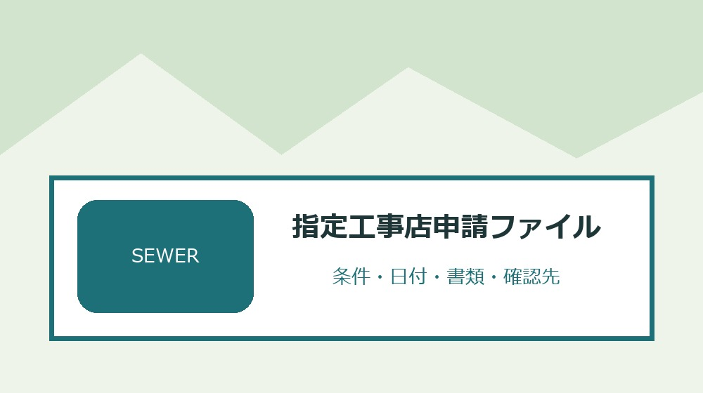
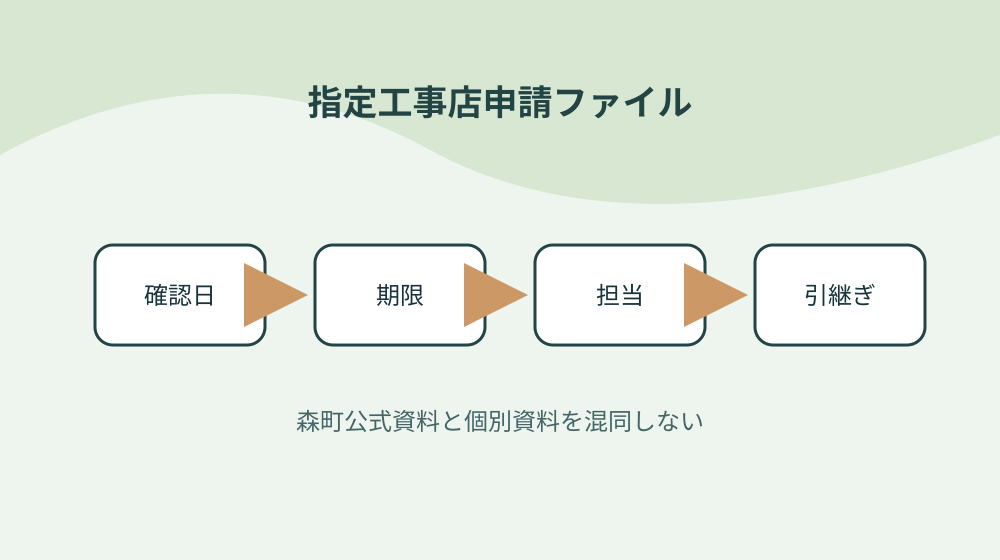

森町の排水設備指定工事店申請を新規・継続・変更書類で整理する

結論：新規か継続かを最初に分けることから始め、技術基準を施工担当へ渡す条件と「森町は排水設備指定工事店の指定申請書類を公開する」の根拠を指定工事店申請ファイルへ結びます。期限と次の確認先まで一行にすれば、森町の排水設備指定工事店申請を新規・継続・変更書類で整理する作業の取り違えを減らせます。
新規か継続かを最初に分ける
森町公式資料で確認できる事実は「森町は排水設備指定工事店の指定申請書類を公開する」です。新規か継続かを最初に分けるでは、この条件を指定工事店申請ファイルの一行へ写し、対象者・対象物・確認日を同じ欄に置きます。制度名だけをメモせず、どの資料のどの条件を確認したかが家族や担当者にもたどれる形にしてください。
新規か継続かを最初に分けるを確かめるときは、「新規指定には指定工事店指定申請書を使う」という公式条件と、手元の通知・領収書・型番・日付を別列にします。必要資料が揃わなければ空欄を推測で埋めず、指定工事店申請ファイルへ未確認の理由と次の照会先を記します。この表の役割は結論を急ぐことではなく、森町の排水設備指定工事店申請を新規・継続・変更書類で整理するで起きる食い違いを安全に発見することです。
指定工事店申請ファイルの作業日は、①「営業所の平面図及び写真を添える様式がある」の掲載資料と更新日を見る、②新規か継続かを最初に分けるの手元資料を照合する、③不足一点だけを窓口へ尋ねる、④回答日と担当を追記する順に進めます。共通条件だけで個別可否を断定せず、森町の排水設備指定工事店申請を新規・継続・変更書類で整理するに関する最新の運用を実行前に確かめます。
指定工事店申請ファイルを引き継ぐ欄には、「専属する責任技術者名簿の様式がある」の確認結果、次に行うこと、期限、原本の保管場所を書きます。新規か継続かを最初に分けるを更新したら旧版を消さず、変更理由と回答した窓口を一行添えます。担当者が替わっても、その事実をどの資料で確かめたかまで戻れるため、同じ問い合わせや書類の取り直しを減らせます。
営業所情報を登記資料と照合する
森町公式資料で確認できる事実は「営業所の平面図及び写真を添える様式がある」です。営業所情報を登記資料と照合するでは、この条件を指定工事店申請ファイルの一行へ写し、対象者・対象物・確認日を同じ欄に置きます。制度名だけをメモせず、どの資料のどの条件を確認したかが家族や担当者にもたどれる形にしてください。
営業所情報を登記資料と照合するを確かめるときは、「専属する責任技術者名簿の様式がある」という公式条件と、手元の通知・領収書・型番・日付を別列にします。必要資料が揃わなければ空欄を推測で埋めず、指定工事店申請ファイルへ未確認の理由と次の照会先を記します。この表の役割は結論を急ぐことではなく、森町の排水設備指定工事店申請を新規・継続・変更書類で整理するで起きる食い違いを安全に発見することです。
指定工事店申請ファイルの作業日は、①「工事経歴書の様式がある」の掲載資料と更新日を見る、②営業所情報を登記資料と照合するの手元資料を照合する、③不足一点だけを窓口へ尋ねる、④回答日と担当を追記する順に進めます。共通条件だけで個別可否を断定せず、森町の排水設備指定工事店申請を新規・継続・変更書類で整理するに関する最新の運用を実行前に確かめます。
指定工事店申請ファイルを引き継ぐ欄には、「誓約書の様式がある」の確認結果、次に行うこと、期限、原本の保管場所を書きます。営業所情報を登記資料と照合するを更新したら旧版を消さず、変更理由と回答した窓口を一行添えます。担当者が替わっても、その事実をどの資料で確かめたかまで戻れるため、同じ問い合わせや書類の取り直しを減らせます。
責任技術者名簿を更新する
森町公式資料で確認できる事実は「工事経歴書の様式がある」です。責任技術者名簿を更新するでは、この条件を指定工事店申請ファイルの一行へ写し、対象者・対象物・確認日を同じ欄に置きます。制度名だけをメモせず、どの資料のどの条件を確認したかが家族や担当者にもたどれる形にしてください。
責任技術者名簿を更新するを確かめるときは、「誓約書の様式がある」という公式条件と、手元の通知・領収書・型番・日付を別列にします。必要資料が揃わなければ空欄を推測で埋めず、指定工事店申請ファイルへ未確認の理由と次の照会先を記します。この表の役割は結論を急ぐことではなく、森町の排水設備指定工事店申請を新規・継続・変更書類で整理するで起きる食い違いを安全に発見することです。
指定工事店申請ファイルの作業日は、①「指定継続の申請書が別に用意される」の掲載資料と更新日を見る、②責任技術者名簿を更新するの手元資料を照合する、③不足一点だけを窓口へ尋ねる、④回答日と担当を追記する順に進めます。共通条件だけで個別可否を断定せず、森町の排水設備指定工事店申請を新規・継続・変更書類で整理するに関する最新の運用を実行前に確かめます。
指定工事店申請ファイルを引き継ぐ欄には、「指定事項変更の届出様式がある」の確認結果、次に行うこと、期限、原本の保管場所を書きます。責任技術者名簿を更新するを更新したら旧版を消さず、変更理由と回答した窓口を一行添えます。担当者が替わっても、その事実をどの資料で確かめたかまで戻れるため、同じ問い合わせや書類の取り直しを減らせます。
平面図と写真の撮影日を残す
森町公式資料で確認できる事実は「指定継続の申請書が別に用意される」です。平面図と写真の撮影日を残すでは、この条件を指定工事店申請ファイルの一行へ写し、対象者・対象物・確認日を同じ欄に置きます。制度名だけをメモせず、どの資料のどの条件を確認したかが家族や担当者にもたどれる形にしてください。
平面図と写真の撮影日を残すを確かめるときは、「指定事項変更の届出様式がある」という公式条件と、手元の通知・領収書・型番・日付を別列にします。必要資料が揃わなければ空欄を推測で埋めず、指定工事店申請ファイルへ未確認の理由と次の照会先を記します。この表の役割は結論を急ぐことではなく、森町の排水設備指定工事店申請を新規・継続・変更書類で整理するで起きる食い違いを安全に発見することです。
指定工事店申請ファイルの作業日は、①「指定工事店証再交付の申請様式がある」の掲載資料と更新日を見る、②平面図と写真の撮影日を残すの手元資料を照合する、③不足一点だけを窓口へ尋ねる、④回答日と担当を追記する順に進めます。共通条件だけで個別可否を断定せず、森町の排水設備指定工事店申請を新規・継続・変更書類で整理するに関する最新の運用を実行前に確かめます。
指定工事店申請ファイルを引き継ぐ欄には、「廃止・休止・再開の届出様式がある」の確認結果、次に行うこと、期限、原本の保管場所を書きます。平面図と写真の撮影日を残すを更新したら旧版を消さず、変更理由と回答した窓口を一行添えます。担当者が替わっても、その事実をどの資料で確かめたかまで戻れるため、同じ問い合わせや書類の取り直しを減らせます。
工事経歴を対象期間で整理する
森町公式資料で確認できる事実は「指定工事店証再交付の申請様式がある」です。工事経歴を対象期間で整理するでは、この条件を指定工事店申請ファイルの一行へ写し、対象者・対象物・確認日を同じ欄に置きます。制度名だけをメモせず、どの資料のどの条件を確認したかが家族や担当者にもたどれる形にしてください。
工事経歴を対象期間で整理するを確かめるときは、「廃止・休止・再開の届出様式がある」という公式条件と、手元の通知・領収書・型番・日付を別列にします。必要資料が揃わなければ空欄を推測で埋めず、指定工事店申請ファイルへ未確認の理由と次の照会先を記します。この表の役割は結論を急ぐことではなく、森町の排水設備指定工事店申請を新規・継続・変更書類で整理するで起きる食い違いを安全に発見することです。
指定工事店申請ファイルの作業日は、①「森町の排水設備技術基準が公開される」の掲載資料と更新日を見る、②工事経歴を対象期間で整理するの手元資料を照合する、③不足一点だけを窓口へ尋ねる、④回答日と担当を追記する順に進めます。共通条件だけで個別可否を断定せず、森町の排水設備指定工事店申請を新規・継続・変更書類で整理するに関する最新の運用を実行前に確かめます。
指定工事店申請ファイルを引き継ぐ欄には、「技術基準は申請書とは別資料である」の確認結果、次に行うこと、期限、原本の保管場所を書きます。工事経歴を対象期間で整理するを更新したら旧版を消さず、変更理由と回答した窓口を一行添えます。担当者が替わっても、その事実をどの資料で確かめたかまで戻れるため、同じ問い合わせや書類の取り直しを減らせます。
誓約書の署名条件を確認する
森町公式資料で確認できる事実は「森町の排水設備技術基準が公開される」です。誓約書の署名条件を確認するでは、この条件を指定工事店申請ファイルの一行へ写し、対象者・対象物・確認日を同じ欄に置きます。制度名だけをメモせず、どの資料のどの条件を確認したかが家族や担当者にもたどれる形にしてください。
誓約書の署名条件を確認するを確かめるときは、「技術基準は申請書とは別資料である」という公式条件と、手元の通知・領収書・型番・日付を別列にします。必要資料が揃わなければ空欄を推測で埋めず、指定工事店申請ファイルへ未確認の理由と次の照会先を記します。この表の役割は結論を急ぐことではなく、森町の排水設備指定工事店申請を新規・継続・変更書類で整理するで起きる食い違いを安全に発見することです。
指定工事店申請ファイルの作業日は、①「記載例が複数公開されている」の掲載資料と更新日を見る、②誓約書の署名条件を確認するの手元資料を照合する、③不足一点だけを窓口へ尋ねる、④回答日と担当を追記する順に進めます。共通条件だけで個別可否を断定せず、森町の排水設備指定工事店申請を新規・継続・変更書類で整理するに関する最新の運用を実行前に確かめます。
指定工事店申請ファイルを引き継ぐ欄には、「上下水道課下水道管理係が問い合わせ先である」の確認結果、次に行うこと、期限、原本の保管場所を書きます。誓約書の署名条件を確認するを更新したら旧版を消さず、変更理由と回答した窓口を一行添えます。担当者が替わっても、その事実をどの資料で確かめたかまで戻れるため、同じ問い合わせや書類の取り直しを減らせます。
技術基準を施工担当へ渡す
森町公式資料で確認できる事実は「記載例が複数公開されている」です。技術基準を施工担当へ渡すでは、この条件を指定工事店申請ファイルの一行へ写し、対象者・対象物・確認日を同じ欄に置きます。制度名だけをメモせず、どの資料のどの条件を確認したかが家族や担当者にもたどれる形にしてください。
技術基準を施工担当へ渡すを確かめるときは、「上下水道課下水道管理係が問い合わせ先である」という公式条件と、手元の通知・領収書・型番・日付を別列にします。必要資料が揃わなければ空欄を推測で埋めず、指定工事店申請ファイルへ未確認の理由と次の照会先を記します。この表の役割は結論を急ぐことではなく、森町の排水設備指定工事店申請を新規・継続・変更書類で整理するで起きる食い違いを安全に発見することです。
指定工事店申請ファイルの作業日は、①「森町は排水設備指定工事店の指定申請書類を公開する」の掲載資料と更新日を見る、②技術基準を施工担当へ渡すの手元資料を照合する、③不足一点だけを窓口へ尋ねる、④回答日と担当を追記する順に進めます。共通条件だけで個別可否を断定せず、森町の排水設備指定工事店申請を新規・継続・変更書類で整理するに関する最新の運用を実行前に確かめます。
指定工事店申請ファイルを引き継ぐ欄には、「新規指定には指定工事店指定申請書を使う」の確認結果、次に行うこと、期限、原本の保管場所を書きます。技術基準を施工担当へ渡すを更新したら旧版を消さず、変更理由と回答した窓口を一行添えます。担当者が替わっても、その事実をどの資料で確かめたかまで戻れるため、同じ問い合わせや書類の取り直しを減らせます。
変更届の対象事項を洗い出す
森町公式資料で確認できる事実は「森町は排水設備指定工事店の指定申請書類を公開する」です。変更届の対象事項を洗い出すでは、この条件を指定工事店申請ファイルの一行へ写し、対象者・対象物・確認日を同じ欄に置きます。制度名だけをメモせず、どの資料のどの条件を確認したかが家族や担当者にもたどれる形にしてください。
変更届の対象事項を洗い出すを確かめるときは、「新規指定には指定工事店指定申請書を使う」という公式条件と、手元の通知・領収書・型番・日付を別列にします。必要資料が揃わなければ空欄を推測で埋めず、指定工事店申請ファイルへ未確認の理由と次の照会先を記します。この表の役割は結論を急ぐことではなく、森町の排水設備指定工事店申請を新規・継続・変更書類で整理するで起きる食い違いを安全に発見することです。
指定工事店申請ファイルの作業日は、①「営業所の平面図及び写真を添える様式がある」の掲載資料と更新日を見る、②変更届の対象事項を洗い出すの手元資料を照合する、③不足一点だけを窓口へ尋ねる、④回答日と担当を追記する順に進めます。共通条件だけで個別可否を断定せず、森町の排水設備指定工事店申請を新規・継続・変更書類で整理するに関する最新の運用を実行前に確かめます。
指定工事店申請ファイルを引き継ぐ欄には、「専属する責任技術者名簿の様式がある」の確認結果、次に行うこと、期限、原本の保管場所を書きます。変更届の対象事項を洗い出すを更新したら旧版を消さず、変更理由と回答した窓口を一行添えます。担当者が替わっても、その事実をどの資料で確かめたかまで戻れるため、同じ問い合わせや書類の取り直しを減らせます。
再交付と廃止届を取り違えない
森町公式資料で確認できる事実は「営業所の平面図及び写真を添える様式がある」です。再交付と廃止届を取り違えないでは、この条件を指定工事店申請ファイルの一行へ写し、対象者・対象物・確認日を同じ欄に置きます。制度名だけをメモせず、どの資料のどの条件を確認したかが家族や担当者にもたどれる形にしてください。
再交付と廃止届を取り違えないを確かめるときは、「専属する責任技術者名簿の様式がある」という公式条件と、手元の通知・領収書・型番・日付を別列にします。必要資料が揃わなければ空欄を推測で埋めず、指定工事店申請ファイルへ未確認の理由と次の照会先を記します。この表の役割は結論を急ぐことではなく、森町の排水設備指定工事店申請を新規・継続・変更書類で整理するで起きる食い違いを安全に発見することです。
指定工事店申請ファイルの作業日は、①「工事経歴書の様式がある」の掲載資料と更新日を見る、②再交付と廃止届を取り違えないの手元資料を照合する、③不足一点だけを窓口へ尋ねる、④回答日と担当を追記する順に進めます。共通条件だけで個別可否を断定せず、森町の排水設備指定工事店申請を新規・継続・変更書類で整理するに関する最新の運用を実行前に確かめます。
指定工事店申請ファイルを引き継ぐ欄には、「誓約書の様式がある」の確認結果、次に行うこと、期限、原本の保管場所を書きます。再交付と廃止届を取り違えないを更新したら旧版を消さず、変更理由と回答した窓口を一行添えます。担当者が替わっても、その事実をどの資料で確かめたかまで戻れるため、同じ問い合わせや書類の取り直しを減らせます。

提出控えと町回答を一件保存する
森町公式資料で確認できる事実は「工事経歴書の様式がある」です。提出控えと町回答を一件保存するでは、この条件を指定工事店申請ファイルの一行へ写し、対象者・対象物・確認日を同じ欄に置きます。制度名だけをメモせず、どの資料のどの条件を確認したかが家族や担当者にもたどれる形にしてください。
提出控えと町回答を一件保存するを確かめるときは、「誓約書の様式がある」という公式条件と、手元の通知・領収書・型番・日付を別列にします。必要資料が揃わなければ空欄を推測で埋めず、指定工事店申請ファイルへ未確認の理由と次の照会先を記します。この表の役割は結論を急ぐことではなく、森町の排水設備指定工事店申請を新規・継続・変更書類で整理するで起きる食い違いを安全に発見することです。
指定工事店申請ファイルの作業日は、①「指定継続の申請書が別に用意される」の掲載資料と更新日を見る、②提出控えと町回答を一件保存するの手元資料を照合する、③不足一点だけを窓口へ尋ねる、④回答日と担当を追記する順に進めます。共通条件だけで個別可否を断定せず、森町の排水設備指定工事店申請を新規・継続・変更書類で整理するに関する最新の運用を実行前に確かめます。
指定工事店申請ファイルを引き継ぐ欄には、「指定事項変更の届出様式がある」の確認結果、次に行うこと、期限、原本の保管場所を書きます。提出控えと町回答を一件保存するを更新したら旧版を消さず、変更理由と回答した窓口を一行添えます。担当者が替わっても、その事実をどの資料で確かめたかまで戻れるため、同じ問い合わせや書類の取り直しを減らせます。
良い点
森町公式資料で確認できる事実は「指定継続の申請書が別に用意される」です。良い点では、この条件を指定工事店申請ファイルの一行へ写し、対象者・対象物・確認日を同じ欄に置きます。制度名だけをメモせず、どの資料のどの条件を確認したかが家族や担当者にもたどれる形にしてください。
良い点を確かめるときは、「指定事項変更の届出様式がある」という公式条件と、手元の通知・領収書・型番・日付を別列にします。必要資料が揃わなければ空欄を推測で埋めず、指定工事店申請ファイルへ未確認の理由と次の照会先を記します。この表の役割は結論を急ぐことではなく、森町の排水設備指定工事店申請を新規・継続・変更書類で整理するで起きる食い違いを安全に発見することです。
指定工事店申請ファイルの作業日は、①「指定工事店証再交付の申請様式がある」の掲載資料と更新日を見る、②良い点の手元資料を照合する、③不足一点だけを窓口へ尋ねる、④回答日と担当を追記する順に進めます。共通条件だけで個別可否を断定せず、森町の排水設備指定工事店申請を新規・継続・変更書類で整理するに関する最新の運用を実行前に確かめます。
指定工事店申請ファイルを引き継ぐ欄には、「廃止・休止・再開の届出様式がある」の確認結果、次に行うこと、期限、原本の保管場所を書きます。良い点を更新したら旧版を消さず、変更理由と回答した窓口を一行添えます。担当者が替わっても、その事実をどの資料で確かめたかまで戻れるため、同じ問い合わせや書類の取り直しを減らせます。
注文したい点
森町公式資料で確認できる事実は「指定工事店証再交付の申請様式がある」です。注文したい点では、この条件を指定工事店申請ファイルの一行へ写し、対象者・対象物・確認日を同じ欄に置きます。制度名だけをメモせず、どの資料のどの条件を確認したかが家族や担当者にもたどれる形にしてください。
注文したい点を確かめるときは、「廃止・休止・再開の届出様式がある」という公式条件と、手元の通知・領収書・型番・日付を別列にします。必要資料が揃わなければ空欄を推測で埋めず、指定工事店申請ファイルへ未確認の理由と次の照会先を記します。この表の役割は結論を急ぐことではなく、森町の排水設備指定工事店申請を新規・継続・変更書類で整理するで起きる食い違いを安全に発見することです。
指定工事店申請ファイルの作業日は、①「森町の排水設備技術基準が公開される」の掲載資料と更新日を見る、②注文したい点の手元資料を照合する、③不足一点だけを窓口へ尋ねる、④回答日と担当を追記する順に進めます。共通条件だけで個別可否を断定せず、森町の排水設備指定工事店申請を新規・継続・変更書類で整理するに関する最新の運用を実行前に確かめます。
指定工事店申請ファイルを引き継ぐ欄には、「技術基準は申請書とは別資料である」の確認結果、次に行うこと、期限、原本の保管場所を書きます。注文したい点を更新したら旧版を消さず、変更理由と回答した窓口を一行添えます。担当者が替わっても、その事実をどの資料で確かめたかまで戻れるため、同じ問い合わせや書類の取り直しを減らせます。
対案・結論
指定工事店申請ファイルは、全項目を一度で完成させるより、「新規か継続かを最初に分ける」から確定する方が実用的です。公式条件、手元資料、窓口回答を別欄にし、新規指定には指定工事店指定申請書を使うという事実と個別事情の食い違いを消さずに残してください。
技術基準を施工担当へ渡すに費用や契約が伴う場合は、対象・期限・事前手続を再確認してから進めます。森町の共通案内だけで個別案件を断定せず、指定継続の申請書が別に用意されるという確認済み情報と手元資料を示して尋ねます。
結論は、提出控えと町回答を一件保存するまでを今日の一行にし、次の確認日を決めることです。指定工事店申請ファイルがあれば、森町の排水設備指定工事店申請を新規・継続・変更書類で整理するの作業を家族や社内担当が同じ根拠から続けられます。
上下水道課下水道管理係が問い合わせ先であるという条件が更新された場合は旧版を削除せず、変更日と採用理由を記します。指定工事店申請ファイルに履歴が残れば、古い書類や判断を使った理由も後から説明できます。
大石の視点
ここまでの「森町は排水設備指定工事店の指定申請書類を公開する」などの制度条件は森町公式資料で確認できる事実です。以下は、私、大石浩之が指定工事店申請ファイルを運用するためにすすめる方法であり、森町や関係機関の公式見解ではありません。
私は指定工事店申請ファイルを紙一枚から始め、営業所情報を登記資料と照合するの原本を動かさず、写しや写真へ番号を付ける方法を勧めます。森町の排水設備指定工事店申請を新規・継続・変更書類で整理するの確認で原本を持ち歩く回数を減らせるからです。
変更届の対象事項を洗い出すに未確認欄が残っても失敗扱いしません。確認先と期限が書かれた未確認欄は、指定事項変更の届出様式があるを根拠なく個別案件へ当てはめるより価値があります。
最後に、指定工事店申請ファイルに含む個人情報や事業情報は共有範囲を決めます。提出控えと町回答を一件保存するための内部版と外部提出版を同じファイルにせず、必要部分だけを渡せる構成にしてください。
よくある質問
指定工事店申請ファイルで最初に確認することは何ですか。
対象者・対象物、基準日、手元資料、森町公式の条件を一行にします。森町は排水設備指定工事店の指定申請書類を公開するという共通条件を起点にしつつ、個別の可否は資料と窓口回答で確定します。
資料が足りないまま指定工事店申請ファイルを作れますか。
作れます。責任技術者名簿を更新するに不足があれば未確認と記し、必要資料、確認先、確認期限を残します。推測で埋めないことが、指定工事店申請ファイルから安全に作業を再開する条件です。
森町公式ページを保存すれば再確認は不要ですか。
上下水道課下水道管理係が問い合わせ先であるなどの条件は変わることがあります。指定工事店申請ファイルへURL、ページ名、確認日を残し、技術基準を施工担当へ渡すを実行する直前に現行案内を再確認してください。
指定工事店申請ファイルを家族や担当者へ渡すとき何を添えますか。
提出控えと町回答を一件保存するため、確認済み事実、未確認事項、期限、次の担当、原本の保管場所、町へ尋ねた日と回答を添えます。指定工事店申請ファイルに含む個人情報は渡す相手と保管方法を限定します。
公式情報源
- 排水設備指定工事店の指定申請（2026年8月19日確認）
- 森町下水道排水設備技術基準（2026年8月19日確認）
最終確認日：2026-08-19 ／ 公表事実と執筆者の解釈・意見を分けて記載しています。